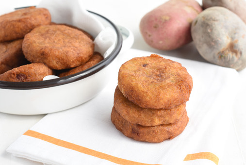

Milcao

Description
Milcao or Melcao (sometimes hypercorrected to Milcado) is a traditional dish originating from
the Chiloé Archipelago in Chile. The dish is a type of potato pancake prepared with raw grated
potatoes and cooked mashed potatoes mixed with other ingredients.
Ingredients
- 1 pound potatoes cooked and mashed
- 1 pound raw potatoes, peeled and grated
- 2 tablespoons butter
- 1 cup cup onion cut into thin slices
- Salt and pepper
- 1/2 cup frying oil
Steps
- Dry the grated potatoes well with paper towels.
- Cook the onion in a pan with the butter for 5 minutes until the onions have caramelized.
- In a bowl, mix the mashed potato with the grated potato until you have a dough. Season with salt and pepper to taste.
- Form balls with the potato dough and poke a hole in the middle with your fingers. Fill it with approximately 1 teaspoon
of the onion mix, or with your favorite filling. Close in the filling by making small pancakes.
- Heat the oil in a nonstick pan over medium-high heat, until the oil is hot.
- Place the pancakes in the oil in batches and reduce the heat to medium. Cook until golden brown, approximately 3 minutes.
Flip them over and cook until they are golden brown on the other side, approximately 3 more minutes.
- Transfer them onto paper towels to drain.